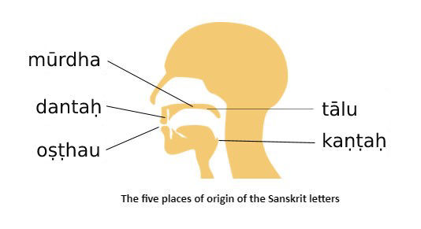
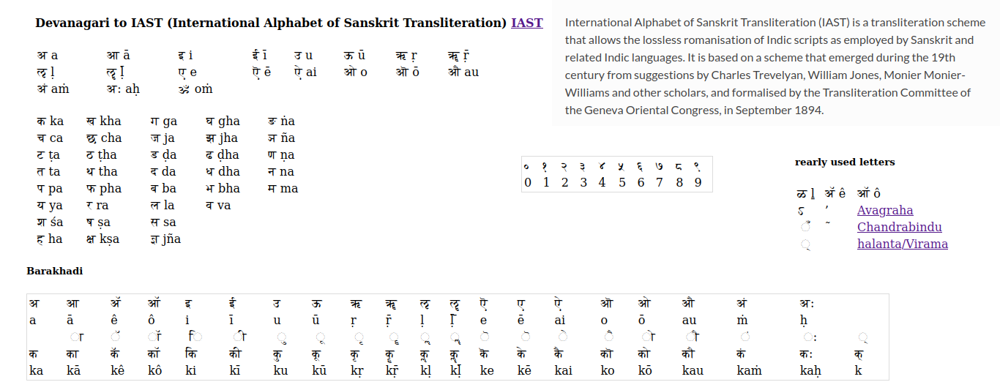
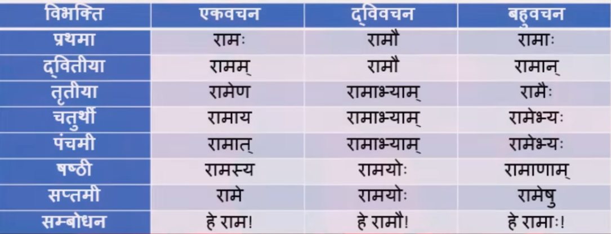

SankritTutorial
Table of Contents
source : http://www.danam.co.uk/Sanskrit/Sanskrit%20Introductory/Wikner%20Sanskrit%20Intro.pdf
https://www.udemy.com/course/complete-comprehensive-and-easy-sanskrit-for-beginners/learn/lecture/24780946#overview
Alphabets akṣara/vraṇa [अक्षर/व्रण]:
In Sanskrit,alphabets are know as akṣara अक्ष
and there are 14 Vowels svara [स्वरा] and 42 Consonants vyañjanā [व्यञ्जना]
Devanagri , is based on phonetic principles that consider both the manner and place of articulation of the consonants and vowels they represent. This arrangement is usually referred to as the varṇamālā ("garland of letters")
In Sanskrit,alphabets are Expalined here https://vedantatoday.com/sanskrit-letters-aksharani/
svara [स्वरा] vowels

| devanagari | |
|---|---|
| kaṇṭhya (Guttural) | अ [a] आ[ā] |
| tālavya (Palatal) | इ[i] ई[ī] |
| oṣṭhya (Labial) | उ[u] ऊ[ū] |
| mūrdhanya (Retroflex) | ऋ[ṛ] ॠ[ṝ] |
| dantya (Dental) | ऌ ॡ |
| kaṇṭhatālavya (Palatoguttural) | ए[e] ऎ [ē] ऐ[ai] |
| kaṇṭhoṣṭhya (Labioguttural) | ओ[o] ऒ [ō] औ[au] |
| अं [aṁ] अः [aḥ] | |
| ॲ ऍ |
vyañjanā [व्यञ्जना] consonants
source : https://en.wikipedia.org/wiki/Devanagari Consonants

IAST
International Alphabet of Sanskrit Transliteration (IAST) is a transliteration scheme that allows the lossless romanisation of Indic scripts as employed by Sanskrit and related Indic languages. It is based on a scheme that emerged during the 19th century from suggestions by Charles Trevelyan, William Jones, Monier Monier-Williams and other scholars, and formalised by the Transliteration Committee of the Geneva Oriental Congress, in September 1894.

[POS] Part Of Speech:
- noun (नामपदम)
- gender (लिंग)
- male : Masculine (pum-linga)
- female: Femine (stri-linga)
- neutral: Neuter (napumsaka-linga)
- plural
- eka-vacan
- dvi-vacan
- bahu-vacan
- gender (लिंग)
- pronoun (सर्वनाम)
- Adjective(विशेषण)
Verb(क्रिया)
- puruṣa
- 1st Person : pratama Pursha
- 2nd Person : madhyama-purusha
- 3rd Person : uttama-pursha
- pada
- parasmai-pada(an expression for another)
- ātmane-pada (an expression for oneself)
- ubhaya-pada
- puruṣa
- Adverb(क्रिया विशेषण)
- Preposition(सम्बंधसूचक अव्यय)
- Conjunction(समुच्यबोधक)
- Interjection(विस्म्यादिभोदक)
[dhātu,shabda, avyaya] Three basic parts of speech
soruce : https://sanskritdocuments.org/learning_tools/grammarintro_sa.html
There are three basic parts of speech in sanskrit :
- shabda (nouns/ pronouns/ adjectives/ participles),
- dhātu(verbs), (indicated with a root symbol \(\sqrt{\;\;}\))
- avyaya (indeclinables: prepositions,conjunctions,adverbs, exclamations etc.)
Here we shall discuss declentions of nouns . The form of a noun used in a sentence dependes on two things :
- Its number, (singular,dual or plural) and
- its vibhakti .
The vibhakti to be used is governed by the role the noun plays in the sentence,
- e.g . subject,object, instrument of action etc .
Here is a brief explanation of vibhaktis along with an example :
Vibhaktis :
source : https://sanskritdocuments.org/learning_tools/grammarintro_sa.html
There are eight possible vibhaktis of a word .
Of these, six relate to an action and hence are also "kāraks"
The other two ṣaṣṭhī(Possesive) and sambodhan(Denominative) do not necessarily associate with an action.
The following table lists the vibhaktis and their meanings.
| prathamā | प्रथमा | Nominative | performer/subject |
| dvitīyā | द्वितीया | Accusative | object |
| tr̥tīyā | तृतीया | Instrumental | instrument |
| caturthī | चतुर्थी | Dative | for whom the action is performed |
| paṁcamī | पंचमी | Ablative | from where the action is performed |
| ṣaṣṭhī | षष्ठी | Possesive | not strictly a vibhakti, denotes possesi on |
| saptamī | सप्तमी | Locative | location of the action |
| sambodhan | सम्बोधन् | Denominative | used to address someone |
 source: https://www.youtube.com/watch?v=H3_e2fccEdk
http://bhagavadgita.org.in/Blogs/5aa8b1d95369ed19b8f4131a
X = \(\frac{Words \;representing \;properties}{Words \;representing \;objects}\) = Words representing properties : Words representing objects
- For most languages:
- X < 1
- X \(\approx\) 1 (approx.)
- X > 1 (slightly)
- For Sanskrit:
- X \(\approx\) 105 (Lakhs)
dhātu [धातु] : root word
A dhātu is a rudimentary verbal element form which words are derived: it is nuclcus to which other word fragments are added to form a whole word.
In Sanskrit there are 2012 dhAtus. every word in sankrit end with vowel(svara स्वरा)
Verbs
A dhātu (indicated with a root symbol \(\sqrt{\;\;}\)) develops to form a stem (anga) and to the stem is added a pernonal ending (tin-vibhakti) to complete verb (kriya). https://sanskritdocuments.org/learning_tutorial_wikner/P009.html
A dātu indicated with a surd or root symbol \(\sqrt{\;\;}\) before i) develops to form a stem a (anga ) and to the stem is added a p ersonal ending (tiṅ-vibhakti ) to form a complete verb kriyā ).
| prathama-puruṣa | tiṣṭhati | he /she /it stands |
| madhyama-puruṣa | tiṣṭhasi | you stand |
| uttama-puruṣa | tiṣṭhāmi | I stand |
pursha :
- 1st Person : pratama Pursha
- 2nd Person : madhyama-purusha
- 3rd Person : uttama-pursha
Sandhi
There are there types of Sandhih
- svara sandhih
- vyanjana sandhih
- visarga sandhih
News
vipratiṣedhe paraṁ kāryam : Sanskrit Puzzle? or Cambridge's Conspiracy! | Rishi Rajpopat on Ashtadhyayi :
https://www.youtube.com/watch?v=4-5EBsNOtKg&list=PLwij7LK8S1MOOfObcfIR5FWIZ-N4AR7Na&index=1
github OpenSource Projects
https://github.com/gasyoun?tab=repositories
| Nagari | Public | Varnamala, ligatures, devanagari 5 2 GNU General Public License v3.0 Updated on Apr 5, 2021 |
| SanskritLexicography | Public | Cologne headword lists HTML 3 Updated on Jan 6, 2021 |
| MWderivations | Public | Forked from funderburkjim/MWderivations |
| Derivations of headwords in the Monier-Williams (1899) dictionary | HTML Updated on Dec 3, 2020 | |
| ClickToQuote | Public | Forked from lidazaikova/ClickToQuote |
| Click-to-Quote with | Variables JS HTML MIT License Updated on Apr 21, 2020 | |
| DeepPavlov | Public | Forked from deeppavlov/DeepPavlov |
| Parallel-Sanskrit-Corpora | Public | Parallel Sanskrit Corpora with European languages MIT License Updated on Nov 28, 2019 |
| gasyoun.github.io | Public | Creating Pages with the automatic generator HTML 3 1 Updated on Nov 22, 2016 |
| ScharfSandhi Public | Forked from funderburkjim/ScharfSandhi Software to apply sandhi to Sanskrit text Python MIT License Updated on Sep 7, 2015 | |
| SanskritSorting | Public | Forked from drdhaval2785/SanskritSorting Codes written by Dr. Dhaval Patel for Sanskrit Natural Language Programming PHP Updated on May 19, 2015 |
| SanskritMacros | Public | EmEditor, MS Excel, MS Word Sanskrit macros, scripts R 1 1 Updated on Oct 25, 2014 |
| SanskritCorpora | Public Word by word translations 3 Updated on Oct 6, 2014 | |
| sanskrit | Public | Forked from shreevatsa/sanskrit |
| Sanskrit-related code | data GNU General Public License v2.0 Updated on Aug 22, 2014 |
https://github.com/sanskrit-lexicon-scans/mw
Dr. Dhaval Patel https://github.com/drdhaval2785?tab=repositories